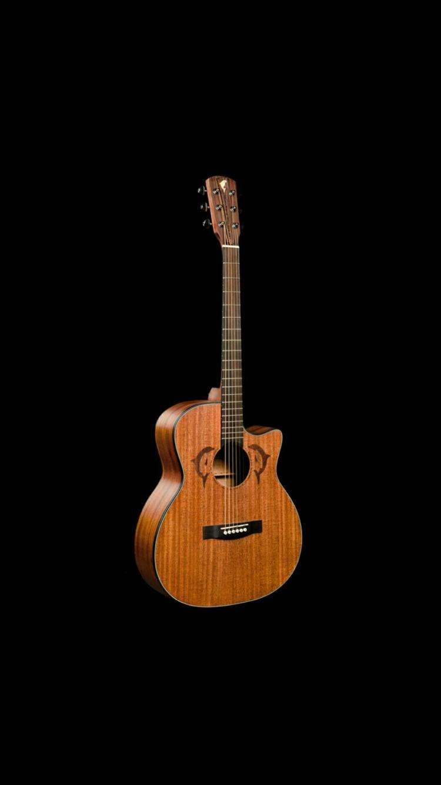
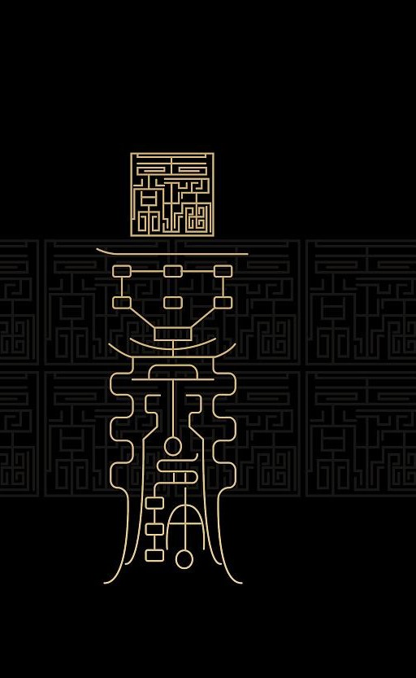
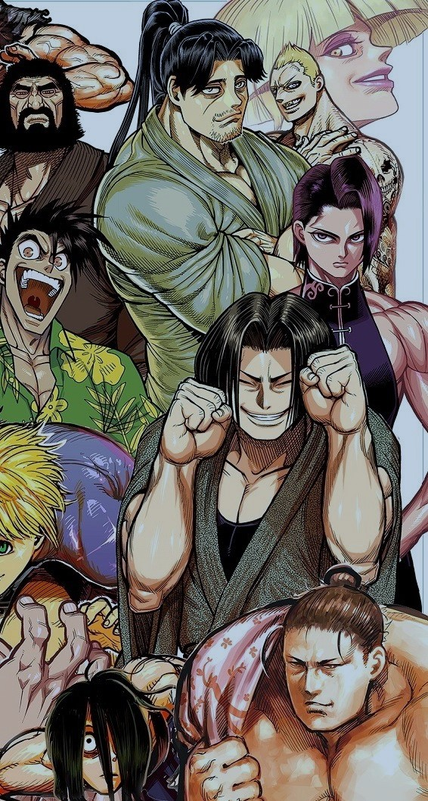
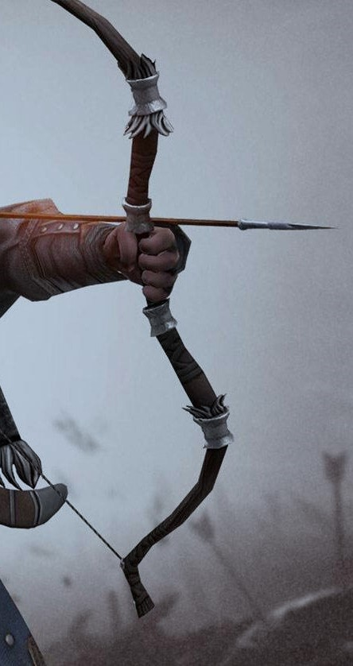
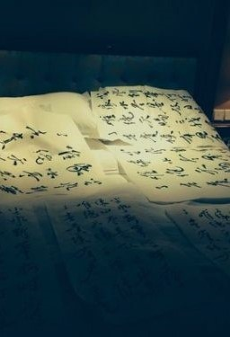
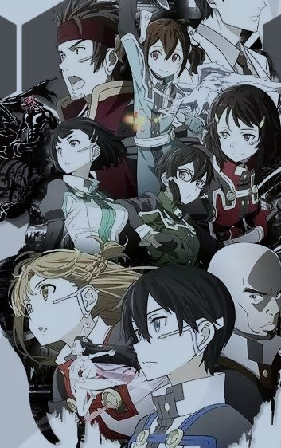

-

吉他
自初二开始学吉他以来，已经有七年了，七年里，除了技术的不断提升，我对音乐的情怀也在不断加深。吉他，甚至音乐已经成了我生活中无可分割的一部分，给予了我莫大的鼓舞与治愈。同时，吉他也让我交到很多朋友呢
-
音乐
音乐确实能够陶冶情操，舒畅人心。我更喜欢安静的音乐，无论的歌还是纯音乐。不过也有一些例外，一些音乐虽然不是很安静，但是意外的能够和我的记忆或者内心产生共鸣，我也十分喜欢，甚至不是喜欢那么简单了，也许，应该叫做“良药”吧
-
阅读
自很小的时候妈妈给我买了一本《三国演义》，我的阅读之旅便开始了。我比较喜欢有关历史的书籍，特别是春秋战国、三国、日本战国以及欧洲中世纪题材的；另外我也十分喜欢科普书籍，比如《时间简史》《果壳中的宇宙》等等；侦探、冒险小说有时候也是我青睐的对象。
-

符号密码
摩尔斯密码、共济会密符、炼金术文字等等好多好多，都是我研究的对象，不知从何时开始，我便沉迷于密符，虽然大学以来稍稍搁置了，但这一直是我的超级爱好（我一度还想成为一名符号学家呢）。虽然现在多是信息算法加密了，但是这些以前的加密方式，还是有着他们独特的魅力的呀
-

格斗
以上看起来，感觉我是一个文弱学者呢，其实我是很喜欢格斗的，我曾自学海豹突击队的格斗术和菲律宾短棍棍法，以前也买过双节棍练习，不过确实有难度哈哈哈。进入大学后，我的体育课一直修的都是散打，也很快得到了老师的认可，但是大二的第二学期由于课程冲突，选不上散打课，一直很遗憾
-

弓箭
弓箭、弹弓、飞镖都是我的爱好，曾经我想要自制弓，可是很难实现，所以就买了一把；弹弓的话，我曾经自制一把弹弓，既是拐（武器），又是弹弓，只是可惜没有保养措施，现在应该发霉了；小学的时候我就有了第一个飞镖靶，当时可是十分疯狂的练习呀
-

作诗
作诗也是我的一个特别的爱好，可以与密符的爱好结合起来，形成内藏含义的诗，其中最简单的就是藏头诗了。虽然喜欢作诗，但是目前正式的作品不过十首，因为很多都是和伙伴相互写在纸条上然后互相解密，结果纸条都没保存下来/哭笑
-

ACG
番剧、漫画以及小部分的轻小说，也是我的爱好。第一次正式接触番剧时，是番剧给予了我鼓舞、带我走出了失落的低谷的时候；而对番剧的喜爱也逐渐延伸到漫画和轻小说，于是便有了网友们相传的一句话“此生无悔入二次元”
ARESDavid
NUM:201821130036